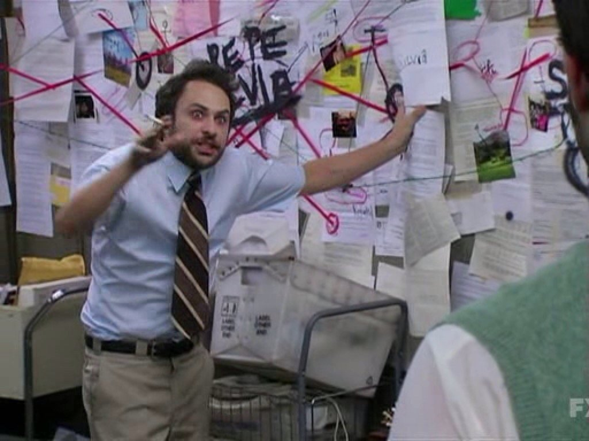

netz.gruene.de
digital grün unterwegs :)
https://taire.de/talks/gruenesnetz
Die Main Characters
Netzbegrünung
grünnaher Verein aus Technikbegeisterten
stellen interne und oeffentliche Dienste bereit
Verdigado
Genossenschaft und Dienstleister fuer B90/Grüne
entstanden aus der Netzbegrünung
Anmelden und loslegen!

genau erklaert auf https://gruenstreifen.netzbegruenung.de/anmelden-im-gruenen-netz/
Partei beitreten
Willkommensmail mit Zugangsdaten erhalten
bei netz.gruene.de anmelden
2. Faktor einrichten, Passwort zuruecksetzen
3D Software
Blender Foundation
Highlights
wolke.gruene.de - Dateiablage
meet.gruene.de - Videokonferenzen
chatbegruenung.de - Chat fuer Parteimitglieder
fertige Templates fuer Websites - perfekt fuer die naechste Kandidatur
3D Software
Blender Foundation
<
>
<
>
<
>
<
>
1
2
3
4